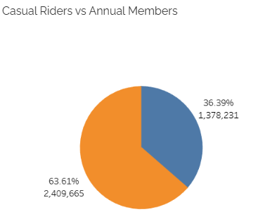
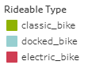
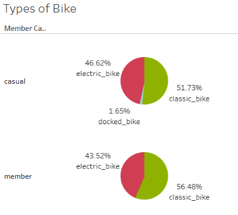
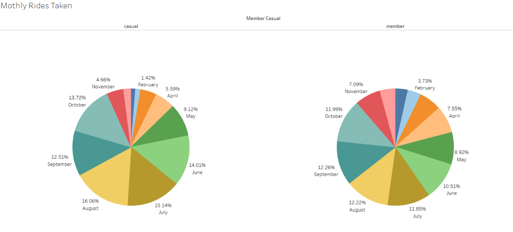
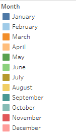
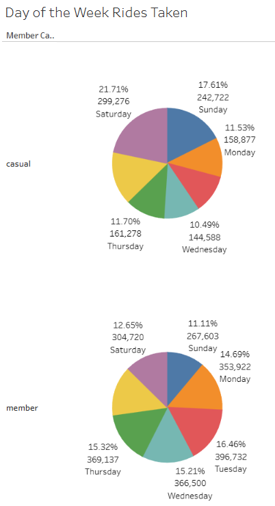
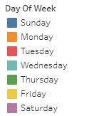
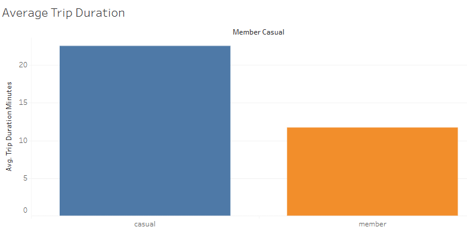
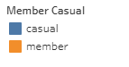
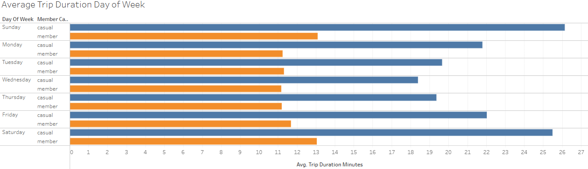

How do Annual Members and Casual Riders use Bikeshare differently?
Google Data Analytics Course
Courtney Speight
Ask
Purpose
The goal of the project is to improve the future success of Bikeshare. The director of marketing believes that the company’s success will come from maximizing the number of annual memberships and would like to design marketing strategies to convert casual riders into annual members. I will analyse data from the past 12 months of Bikeshare trip data to identify the different uses between casual riders and customers with annual memberships.
Question set to answer:
- How do annual members and casual riders use Cyclistic bikes differently?
Prepare
I will be using the public data provided by Motivate International Inc. under this license for the fictional company, Cyclistic’s trip data. Specifically, I will be using only the data from December 2024 to November 2025. The dataset contains CSV files that document various details regarding each ride taken by either annual members or casual riders.
Data privacy issues prohibit access to riders’ personally identifiable information, meaning I cannot connect pass purchases to credit card numbers to determine if casual riders live in the Cyclistic service area or if they have purchased multiple single passes.
The data is organised by 13 column headers:
- ride_id - This is the primary key for each ride
- rideable_type - This is the type of bike used
- started_at - Date and Time the ride started
- ended_at - Date and Time the ride ended
- start_station_name - The name of the station the ride started at
- start_station_id - The id of the station the ride started at.
- end_station_name - The name of the station the ride ended at
- end_station_id - The id of the station the ride ended at
- start_lat - The latitude of the station the ride started at
- start_lng - The longitude of the station the ride started at
- end_lat - The latitude of the station the ride ended at
- end_lng - the longitude of the station the ride ended at
- member_casual - If the ride was completed by a member or casual rider
Does the data comply with ROCCC?
Reliability - The data is reliable as it reflects all the rides taken
Original - We know the data is original as we know the source it came from
Comprehensive - The data is comprehensive as it contains all the information required to complete the analysis to answer the business question.
Current - The data ranges from 2020 and is updated every month, meaning we can select the current previous 12 months to have up-to-date data.
Cited - The data is made available by Motivate International Inc., which is a credible source.
Process
I downloaded all the data from December 2024 to November 2025 as zip files to my local desktop and extracted the data.
Due to the large volume of data in the spreadsheets, I am choosing to use SQL to process and clean the data, so I uploaded all 12 spreadsheets as tables into BigQuery.
To make the data easier to work with, I will use SQL to create a new table and UNION all 12 spreadsheets together. This will enable me to work with a single table to clean all the data at once.
CREATE TABLE `data-analyst-course-3-479114.bikeshare_tripdata.all_tripdata` AS
SELECT *
FROM `data-analyst-course-3-479114.bikeshare_tripdata.tripdata_1224`
UNION ALL
SELECT *
FROM `data-analyst-course-3-479114.bikeshare_tripdata.tripdata_0125`
UNION ALL
SELECT *
FROM `data-analyst-course-3-479114.bikeshare_tripdata.tripdata_0225`
UNION ALL
SELECT *
FROM `data-analyst-course-3-479114.bikeshare_tripdata.tripdata_0325`
UNION ALL
SELECT *
FROM `data-analyst-course-3-479114.bikeshare_tripdata.tripdata_0425`
UNION ALL
SELECT *
FROM `data-analyst-course-3-479114.bikeshare_tripdata.tripdata_0525`
UNION ALL
SELECT *
FROM `data-analyst-course-3-479114.bikeshare_tripdata.tripdata_0625`
UNION ALL
SELECT *
FROM `data-analyst-course-3-479114.bikeshare_tripdata.tripdata_0725`
UNION ALL
SELECT *
FROM `data-analyst-course-3-479114.bikeshare_tripdata.tripdata_0825`
UNION ALL
SELECT *
FROM `data-analyst-course-3-479114.bikeshare_tripdata.tripdata_0925`
UNION ALL
SELECT *
FROM `data-analyst-course-3-479114.bikeshare_tripdata.tripdata_1025`
UNION ALL
SELECT *
FROM `data-analyst-course-3-479114.bikeshare_tripdata.tripdata_1125` |
I can now start cleaning the data as a whole. I begin by checking the data for any duplicates. As ride_id is our primary key, these should all be unique values and consist of no duplicate ride_ids.
SELECT
COUNT(ride_id) /* Counts the total number of ride_id */
FROM `data-analyst-course-3-479114.bikeshare_tripdata.all_tripdata`
|
Query Results - 5576019
SELECT
DISTINCT COUNT(ride_id) /* Counts the number of unique ride_id */
FROM `data-analyst-course-3-479114.bikeshare_tripdata.all_tripdata`
|
Query Results - 5576019
From these results, we can see there are no ride_id duplicates within this data set, so I can continue on to check for any missing data.
Before making any amendments to the table, I made a copy of it in case I need to refer back to the original data at any point.
SELECT
COUNT(*)
FROM `data-analyst-course-3-479114.bikeshare_tripdata.all_tripdata`
WHERE
rideable_type is NULL |
Query Results - 0
SELECT
COUNT(*)
FROM `data-analyst-course-3-479114.bikeshare_tripdata.all_tripdata`
WHERE
started_at is NULL |
Query Results - 0
SELECT
COUNT(*)
FROM `data-analyst-course-3-479114.bikeshare_tripdata.all_tripdata`
WHERE
ended_at is NULL |
Query Results - 0
SELECT
COUNT(*)
FROM `data-analyst-course-3-479114.bikeshare_tripdata.all_tripdata`
WHERE
start_station_name is NULL |
Query Results - 1150169
SELECT
COUNT(*)
FROM `data-analyst-course-3-479114.bikeshare_tripdata.all_tripdata`
WHERE
start_station_id is NULL |
Query Results - 1150169
SELECT
COUNT(*)
FROM `data-analyst-course-3-479114.bikeshare_tripdata.all_tripdata`
WHERE
end_station_name is NULL |
Query Results - 1205404
SELECT
COUNT(*)
FROM `data-analyst-course-3-479114.bikeshare_tripdata.all_tripdata`
WHERE
end_station_id is NULL |
Query Results - 1205404
SELECT
COUNT(*)
FROM `data-analyst-course-3-479114.bikeshare_tripdata.all_tripdata`
WHERE
start_lat is NULL |
Query Results - 0
SELECT
COUNT(*)
FROM `data-analyst-course-3-479114.bikeshare_tripdata.all_tripdata`
WHERE
start_lng is NULL |
Query Results - 0
SELECT
COUNT(*)
FROM `data-analyst-course-3-479114.bikeshare_tripdata.all_tripdata`
WHERE
end_lat is NULL |
Query Results - 5442
SELECT
COUNT(*)
FROM `data-analyst-course-3-479114.bikeshare_tripdata.all_tripdata`
WHERE
end_lng is NULL |
Query Results - 5442
SELECT
COUNT(*)
FROM `data-analyst-course-3-479114.bikeshare_tripdata.all_tripdata`
WHERE
member_casual is NULL |
Query Results - 0
I have now located where any null values lie within the dataset and can remove them.
SELECT *
FROM `data-analyst-course-3-479114.bikeshare_tripdata.all_tripdata`
WHERE
start_station_id IS NOT NULL
AND (start_station_name IS NOT NULL)
AND (end_station_name IS NOT NULL)
AND (end_station_id IS NOT NULL)
AND (end_lat IS NOT NULL)
AND (end_lng IS NOT NULL) |
Due to BigQuery limitations, I cannot delete rows from the table, so I ran the above query and created a new table from the results, and I'm now storing the dataset without any missing data.
I then checked the rideable_type and member_casual fields for any incorrect capitalisation, misspellings, or additional spaces.
SELECT
DISTINCT rideable_type
FROM `data-analyst-course-3-479114.bikeshare_tripdata.all_tripdata_new` |
SELECT
DISTINCT member_casual
FROM `data-analyst-course-3-479114.bikeshare_tripdata.all_tripdata_new` |
The outputs returned with no corrections required.
I also wanted to check if the starting and ending times for each ride made sense, so I checked to see if there were any cases where the ended_at field was earlier than the started_at field.
SELECT
started_at,
ended_at
FROM `data-analyst-course-3-479114.bikeshare_tripdata.all_tripdata_new`
WHERE ended_at < started_at |
The query results showed there were 19 cases where the ended_at time was earlier than the started_at time.
I then ran this query to save a new table to remove those cases and named this all_trip_data_clean, ready for analysis.
SELECT
*
FROM `data-analyst-course-3-479114.bikeshare_tripdata.all_tripdata_new`
WHERE started_at < ended_at |
Analyse
To begin the Analysis, I ran a query to calculate and add new fields to the table that should be useful in answering the business question.
I added a field to show which day of the week a ride was done on, as well as a field to show which month. These fields will help me view if there is a trend between certain days and months with annual members or casual riders.
I also added one more field to show the length of the ride.
SELECT
*,
CASE
WHEN EXTRACT(DAYOFWEEK FROM started_at) = 1 THEN 'Sunday'
WHEN EXTRACT(DAYOFWEEK FROM started_at) = 2 THEN 'Monday'
WHEN EXTRACT(DAYOFWEEK FROM started_at) = 3 THEN 'Tuesday'
WHEN EXTRACT(DAYOFWEEK FROM started_at) = 4 THEN 'Wednesday'
WHEN EXTRACT(DAYOFWEEK FROM started_at) = 5 THEN 'Thursday'
WHEN EXTRACT(DAYOFWEEK FROM started_at) = 6 THEN 'Friday'
WHEN EXTRACT(DAYOFWEEK FROM started_at) = 7 THEN 'Saturday'
END AS day_of_week,
CASE
WHEN EXTRACT(MONTH FROM started_at) = 1 THEN 'January'
WHEN EXTRACT(MONTH FROM started_at) = 2 THEN 'February'
WHEN EXTRACT(MONTH FROM started_at) = 3 THEN 'March'
WHEN EXTRACT(MONTH FROM started_at) = 4 THEN 'April'
WHEN EXTRACT(MONTH FROM started_at) = 5 THEN 'May'
WHEN EXTRACT(MONTH FROM started_at) = 6 THEN 'June'
WHEN EXTRACT(MONTH FROM started_at) = 7 THEN 'July'
WHEN EXTRACT(MONTH FROM started_at) = 8 THEN 'August'
WHEN EXTRACT(MONTH FROM started_at) = 9 THEN 'September'
WHEN EXTRACT(MONTH FROM started_at) = 10 THEN 'October'
WHEN EXTRACT(MONTH FROM started_at) = 11 THEN 'November'
WHEN EXTRACT(MONTH FROM started_at) = 12 THEN 'December'
END AS month,
DATE_DIFF(ended_at, started_at, MINUTE) AS trip_duration_minutes
FROM `data-analyst-course-3-479114.bikeshare_tripdata.all_trip_data_clean` |
I wanted to see initially how many rides consisted of annual members and how many were casual riders.
SELECT
member_casual,
COUNT(*) as rides_count,
COUNT(*) * 100/ SUM(COUNT(*)) OVER() AS percent
FROM `data-analyst-course-3-479114.bikeshare_tripdata.all_tripdata_complete`
GROUP BY
member_casual |
Using this query, it gave me results of 36.4% of riders are casual riders and 63.6% are annual members, showing me that already a good amount of the users are already annual members.
Analysing the types of bikes available compared to those that are more frequently used showed me that docked bikes are rarely used, and when used are only used by casual riders. And I found that both casual riders and annual members greatly preferred classic bikes over electric bikes.
- For casual riders 51.73% of rides were done on a classic bike, 46.62% on an electric bike and 1.65% on a docked bike.
- For annual members, 56.48% use a classic bike, and 43.52% used an electric bike, with no docked bikes being used at all
Next, I analysed patterns for each day of the week. I looked at how each group uses the rides on a day-to-day basis and found that:
- The day with the most rides by casual riders was a Saturday at 21.71% of all casual rides, and the lowest day for rides was Wednesday at 10.49%
- The day with the most rides by annual members was Tuesday at 16.46% of all annual members' rides, and the lowest day for rides was Sunday at 11.11%
The split for annual members was quite even across weekdays, suggesting they may use the service frequently for commuting to work. Whereas casual riders appear to use the service more frequently on weekends, usage dips during the week.
Now, looking at the monthly data, I found trends quite similar between casual riders and annual members:
- The month with the most rides by casual riders was August at 16.06% of all casual rides, and the lowest month was January at 1.24%
- The month with the most rides by annual members was again August at 12.22% of all annual members' rides compared to the lowest was January, at 3.49%
For both types of riders the usage increases in the summer months but for annual members there is more of an even spread, further confirming annual members are likely using the service to commute even in the winter months.
Comparing the trip duration of the different users showed me that:
- Casual riders on average have longer trips, their average trip duration was 22.52 minutes
- Annual riders average trip duration was 11.73 minutes.
- Casual riders had longer trip durations on Saturday and Sundays, and dipped a lot during and towards the middle of the week.
- Annual riders had a relatively constant average of trip during throughout the full week, only slightly increasing for Saturdays and Sundays.
Share
These visualisations will show and further support the analysis mentioned above in a way that makes it easy to see the results.

The majority of riders using Cyclistic are already annual members. However 1.3million are casual members. This is a large amount, and with the right marketing, could convert to annual members.


Classic bikes were the most popular choice for both types of riders, with docked bikes not being used at all by annual members.


Rides increase for both types of riders during the summer months and dip during the winter months, with annual members riding slightly more frequently during the winter months.


We can see the difference here that casual riders use the service more on the weekend compared to annual members more consistently during the week.


This visualisation shows that casual members have a much higher average trip duration than the annual members.
Casual riders have a much higher trip duration on weekends than during the week, and annual members’ trip duration remains relatively consistent throughout the whole week.
Act
The last stage of the data analysis process is to, using the results obtained from the analysis, share some recommendations to answer the business question.
Recommendations
- Create a new type of Annual Membership that could be tailored towards weekend use of the bikes. This is targeted towards the usage of casual riders.
- Introduce a Monthly Membership option, as casual riders are more likely to spontaneously use the service, they may not want to be locked into an annual membership. A monthly membership would give them some more freedom and could lead to them becoming an annual member later on.
- Introducing limited-time discounts during the summer months could encourage casual riders to sign up when the number of rides is at its highest.
- Survey the casual riders via email or phone to gain an understanding of why they choose to use the service as a casual rider over being a member, and what would make them more likely to sign up for a membership.